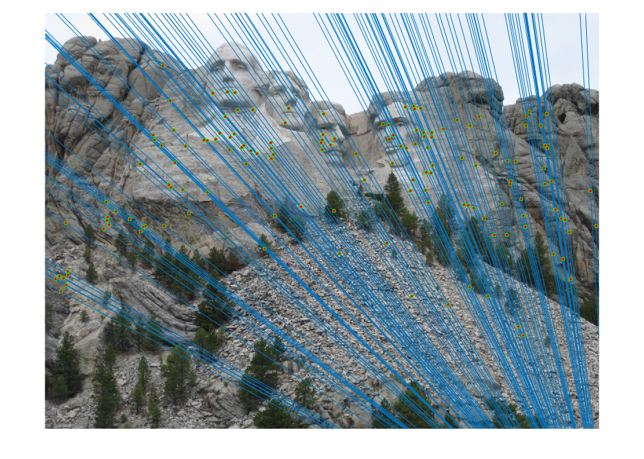
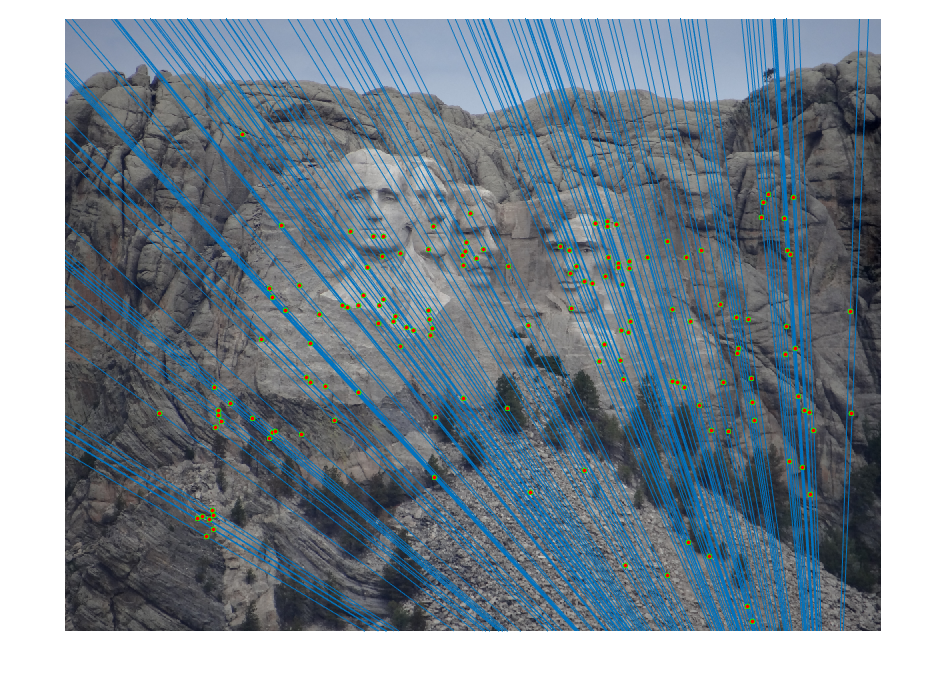
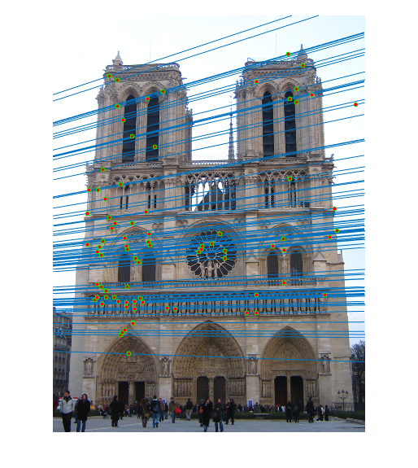

Project 3 / Camera Calibration and Fundamental Matrix Estimation with RANSAC
Part1: Camera Projection Matrix
In this part, I compute the camera projection matrix.

[rows cols] = size(Points_3D);
%Initiate A
A = zeros(rows * 2, 12);
%Compute A
for r = 1: rows
A(2*r-1, :) = [Points_3D(r, 1) Points_3D(r, 2) Points_3D(r, 3) 1 0 0 0 0 ...
-Points_2D(r, 1)*Points_3D(r, 1) -Points_2D(r, 1)*Points_3D(r, 2)...
-Points_2D(r, 1)*Points_3D(r, 3) -Points_2D(r, 1)];
A(2*r, :) = [0 0 0 0 Points_3D(r, 1) Points_3D(r, 2) Points_3D(r, 3) 1 ...
-Points_2D(r, 2)*Points_3D(r, 1) -Points_2D(r, 2)*Points_3D(r, 2) ...
-Points_2D(r, 2)*Points_3D(r, 3) -Points_2D(r, 2)];
end
%Compute the eigenvalues and corresponding eigenvectors of A' * A
[eigenVector eigenValue] = eig(A' * A);
%The eigenvector m corresponding to the minimal eigenvalue
m = eigenVector(:, 1);
%Convert m to a 3 by 4 matrix M
M = vec2mat(m, 4);
| Figure 1 | Figure 2 |
|---|---|
To optimize the computation of camera projection matrix, I pick three point set size, k = 8, 12, 16, repeat 10 times:
- Randomly choose k points from 2D list and their corresponding points in 3D list
- Compute the projection matrix M on those points
- Pick 4 points not in my set of k and compute the average residue
- Find the matrix that gives the lowest residue
[rows cols] = size(Points_3D);
k_s = [8; 12; 16]; %k = 8, 12, 16
M_matrix = cell(3, 10); %This will contain 30 matrices M
residue_matrix = zeros(3, 10); %This will contain 30 residues, correspondingly
for num = 1: 3
k = k_s(num);
for times = 1: 10 %Repeat 10 times
randomSorting = randperm(rows);
indexM = randomSorting(1, 1:k); %pick up the first k entries as the indecies of 2D and 3D points
indexR = randomSorting(1, k+1: k+4);
% Compute A
A = zeros(k*2, 12);
for r = 1: k
A(2*r-1, :) = [Points_3D(indexM(r), 1) Points_3D(indexM(r), 2) Points_3D(indexM(r), 3) 1 0 0 0 0 ...
-Points_2D(indexM(r), 1)*Points_3D(indexM(r), 1) -Points_2D(indexM(r), 1)*Points_3D(indexM(r), 2)...
-Points_2D(indexM(r), 1)*Points_3D(indexM(r), 3) -Points_2D(indexM(r), 1)];
A(2*r, :) = [0 0 0 0 Points_3D(indexM(r), 1) Points_3D(indexM(r), 2) Points_3D(indexM(r), 3) 1 ...
-Points_2D(indexM(r), 2)*Points_3D(indexM(r), 1) -Points_2D(indexM(r), 2)*Points_3D(indexM(r), 2) ...
-Points_2D(indexM(r), 2)*Points_3D(indexM(r), 3) -Points_2D(indexM(r), 2)];
end
[eigenVector eigenValue] = eig(A' * A);
m = eigenVector(:, 1);
M = vec2mat(m, 4);
residue = 0;
for i = 1: 4
estimated_2D_Homo_pixel = M * [Points_3D(indexR(i), 1: 3) 1]';
estimated_2D_pixel = [estimated_2D_Homo_pixel(1)/estimated_2D_Homo_pixel(3);...
estimated_2D_Homo_pixel(2)/estimated_2D_Homo_pixel(3)];
residue = residue + sqrt((estimated_2D_pixel(1)-Points_2D(indexR(i), 1))^2+...
(estimated_2D_pixel(2)-Points_2D(indexR(i), 2))^2);
end
residue_matrix(num, times) = residue / 4;
M_matrix(num, times) = {M};
end
end
[min_residue index] = min(residue_matrix(:)); %find the minimal residue and find the best M
[i j] = ind2sub(size(residue_matrix), index);
best_M = M_matrix{i, j};
Projection = best_M*[Points_3D ones(size(Points_3D,1),1)]';
Projection = Projection';
u = Projection(:,1)./Projection(:,3);
v = Projection(:,2)./Projection(:,3);
Projected_2D_Pts = [u v];
| Figure 3 | Figure 4 |
|---|---|
Part2: Fundamental Matrix Estimation
In this part, I implement the function of fundamental matrix estimation, and also the funciton of drawing epipolar line by myself. The function is named "draw_epipolar_line2.m"
[rows cols] = size(Points_a);
A = zeros(rows, 9);
%Compute A
for r = 1: rows
A(r, :) = [Points_a(r, 1)*Points_b(r, 1) Points_a(r, 1)*Points_b(r, 2) Points_a(r, 1) Points_a(r, 2)*Points_b(r, 1) ...
Points_a(r, 2)*Points_b(r, 2) Points_a(r, 2) Points_b(r, 1) Points_b(r, 2) 1];
end
[eigenVector eigenValue] = eig(A' * A);
tildef = eigenVector(:, 1);
tildeF = vec2mat(tildef, 3);
%Fundamental matrix F with Full Rank
F_matrix = rank(tildeF);
[U, S, V] = svd(tildeF);
S(3, 3) = 0;
%Fundamental matrix F with rank 2
F_matrix = U * S * V';
| Figure 5 | Figure 6 |
|---|---|
 |
|
Part3: Fundamental Matrix with RANSAC
Now, we have keypoints, descriptors, and matches. To implement RANSAC, use the matched keypoints for imageA and imageB, randomly select one of the putative matches. This can provide you an offset between two images. Find out how many other putative matches agree with this offset with a particular tolerance. Then, find the best such translation, which is the one with the biggest consensus set.
In this part, I tried to normalize the coordinates before computing the fundamental matrix. The output is better than previous fundamental matrix estimation.
Here are several output of RANSAC:
1, Mount Rushmore
| Figure 7 | Figure 8 |
|---|---|
|  |  |
2, Notre Dame
| Figure 9 | Figure 10 |
|---|---|
|  |
3, Episcopal Gaudi
| Figure 11 | Figure 12 |
|---|---|